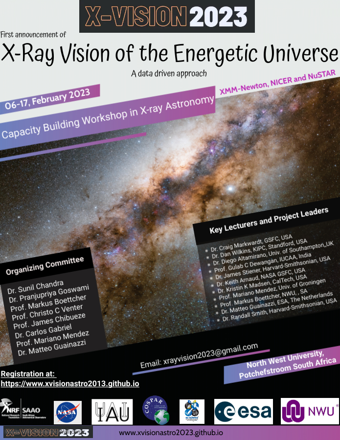

---
# You don't need to edit this file, it's empty on purpose.
# Edit theme's home layout instead if you wanna make some changes
# See: https://jekyllrb.com/docs/themes/#overriding-theme-defaults
layout: page
slide_id: 0
---


<div class="row">
    <div class="col-xs-12 col-sm-12 col-md-6 col-lg-6 col-xl-6 text-justify conference-text">

            <h5>WELCOME TO X-VISION2023!</h5>

            <p class="lead">
                This Capacity Building Workshop aims to provide a unique platform for the students 
                and young researchers from developing nations to learn the handling of X-ray data 
                from the missions like XMM-Newton, NICER and NuSTAR. The teams of experts include 
                a number of renowned senior lecturers from various fields. The hands-on sessions are 
                supposed to be led by the respective instrument team members. 
                
                The Workshop aims also at creating local know-how enabling a generation of
                young researchers to use the future X-ray observing 
                facilities like XRISM, ATHENA, Arcus etc. Needless to emphasize that these observatories
                shall undoubtedly trigger entirely a new era in X-ray astronomy and our 
                understanding of the energetic universe.  
            </p>   

            <p> This workshop is the first of its kind where <a href="https://www.iau.org">the International Astronomical Union 
                (IAU)</a> and <a href="https://cosparhq.cnes.fr/">Committee on Space Research 
                (COSPAR)</a> are jointly supporting such an intiative for capacity building
                 in Astronomy. This workshop is also supported generously by
                 <a href="https://sagamma.org">the South African Gamma-ray Astronomy Programme 
                (SA-GAMMA)</a> and <a hrfe="https://nwu.ac.za">Center for Space Research, 
                North-West University, Potchefstroom</a>, <a href="https://nasa.gov">NASA</a>
                and <a href= "https://www.esa.int/"> European Space Agency (ESA)</a> in various 
                forms.  
            </p>
            <p> Limited financial supports in terms of air travel, accommodation etc shall be
                be provided</p> 
                <p>The Lectures and hands-on sessions shall revolve around the following
                    major scientific areas, but are by no means limited to:</p>
                
                <ul>
                <li>The ionized outflows from black-hole objects</li>
                <li>The spin, mass and nature of accretion disk in Stellar mass Black holes and AGNs</li>
                <li>The X-ray emission from Blazars and connection with the TeV emission from jets</li>
                <li>Thermal X-ray emission from Galaxy Clusters</li>
                <li>X-ray emission from Pulsars</li>
                <li>Multi-Messenger Astronomy and Transients</li>
                <li>High energy Astronomy in South Africa</li>
                </ul>
   
                {% include contact-us.html %}

    </div>
    <div class="col-xs-12 col-sm-12 col-md-6 col-lg-6 col-xl-6">
            <!--######### important dates ##########-->
            {% include card-important-dates.html %}
            <!--####################################-->
            <!--######### news #####################-->
            {% include card-news.html %}
            <!--####################################-->
        
            <!--########## Advertisment Poster #####-->
        
        
    </div>
</div>


{% include sponsors.html %}


